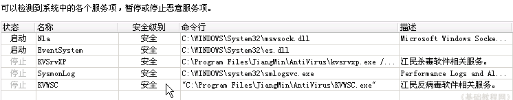
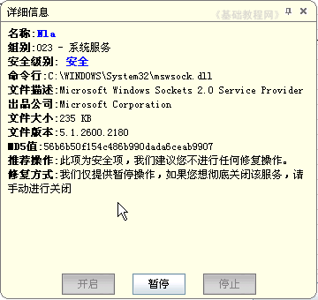
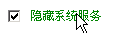

360安全卫士操作基础
十二、系统服务状态 返回目录
系统服务是指一些后台运行的程序，提供一些功能支持，通常会随系统启动而自动运行，病毒也有可能隐藏其中，下面我们来看一个练习；
1、运行程序
1）在桌面找到一个绿色盾牌的图标，这个就是安全卫士的快捷方式，双击运行360安全卫士；
2）程序运行后，首先进行系统检查，上面有个进度条不断移动，在下面的状态栏里还有升级的提示，
一般来说，绿色是安全的，黄色是警告提醒，红色是发现问题；
2、修复系统漏洞
1）启动完成后，点击上边的“高级－系统服务状态”；
2）经过扫描后，中间显示各个服务列表，包括名称、安全级别、位置等等；

3）注意观察安全级别中应该都是“安全”，如果有异常可以点击后，按提示进行操作；

4）对于安全的服务项，如果想要停止或关闭，可以点“开始－控制面板－性能和维护－管理工具－服务”，然后进行操作，
操作前找一个本子记一下，操作的哪个服务、原来的状态是什么，凡是修改了的地方都记一下；
5）在列表的左下角有一个“隐藏系统服务”的复选框，单击去掉勾以后，会显示所有加载的服务，也可以看一下；

本节学习了查看系统服务状态的基本方法，如果你成功地完成了练习，请继续学习下一课内容；
本教程由86团学校TeliuTe制作|著作权所有
基础教程网：http://teliute.org/
美丽的校园……
转载和引用本站内容，请保留作者和本站链接。